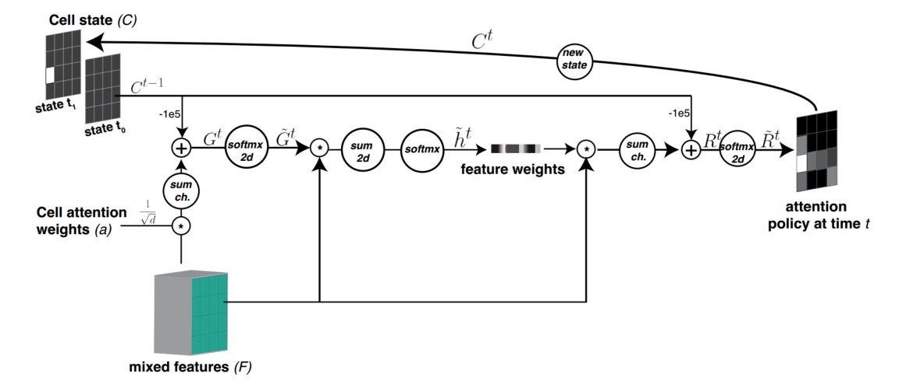
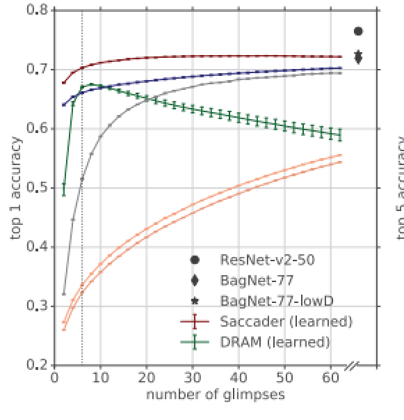

Tips in Papers
1. Hard Attention
1.1. 2019 Scacader: Improving Accuracy of Hard Attention Models for Vision
1.1.1. Hard Attention选择相关的特征作为输入，是真正具有可解释性的。从下面第一段话，可以看出，hard attention是真正和性能挂钩的。也一定和特征重要性是吻合的。但是Soft Attention不具有可解释性，小权重的特征并不一定不重要
Our best models narrow the gap to common ImageNet baselines, achieving 75% top-1 and 91% top-5 while attending to less than one-third of the image.We further demonstrate that occluding the image patches prposed by the Saccader model highly impairs classification, thus confirming these patches strong relevance to the classification task.
Typical soft attention mechanisms rescale features at one or more stages of the network. The soft mask used for rescaling often to provide some insight into the model’s decision-making process, but the model’s final decision may nonetheless rely on information provided by features with small weights 1
1.1.2. 文中glimpse的含义，可以理解成每一个位置，即每一个patch，就是一个glimpse。
Models that employ hard attention make decisions based on only a subset of pixel in the input image, typically in the form of a series of glimpses.
1.1.3. 文章提出了Hard Attention与双阶段目标检测算法的相似性。他们都是截取图像块作为输入，然后进行分类。不同的是，目标检测算法对于目标的位置是有标签的，而Hard Attention是无标签的。
Altough our aim in this work is to perform classification with only image-level class labels, out approach bears some resembalance to two-stage object detection models.
These models operate by generating many region proposals and then applying a classification model to each proposal.
Unlike our work, these approaches use ground-truth bounding boxes to train the classification model, and modern architectures also use bounding boxes to supervise the proposal generator.
目标检测和Hard Attention的相似之处在于，他们都同时关注目标的位置和类别。相比于目标检测，Hard Attention可以做的更精细, i.e., 它可以像目标检测一样在图像域上挑选特征，它还可以在任意一个特征域里挑选特征；它不仅可以像目标检测一样，挑选空域的特征，还可以挑选通道域的特征。
1.1.4. 总结构

最上面的rep. net以及logits per location之前都属于representation network。这部分挺常规，但是使用了‘BagNet’2的方法，该方法保持了输出特征图中每个像素的感受野大小。
下面的atten. net就是几个卷积层的堆叠。没有attention机制。到Sacadder cell之前都是常规操作，除了一个what和where的concat得到mixed。
Saccader cell是技术关键点。
coordinate at time t的slice操作，对于坐标的选择而言，是一个不可导的操作。这里是强化学习介入的地方。而且注意，这里t是一个序列，最后的prediction是求平均。
1.1.5. Saccader cell

值得注意的几点
Cell state是一个state的序列，每个state都是一个经过2d softmax的logit。这个logit表示该state预测的位置。
This cell produces a sequence of locations. Elements in the sequence correctpond to target locations.
需要保证cell state中预测之间都是不同的。$C^t$记录了t时刻位置探索过的所有位置。那些位置的值是1。所以$C^{t - 1}$两次介入$C^t$的计算都乘以一个非常小的数$-10^5$ ，这样就保证了在2d softmax的时候，探索过的位置无法胜出。
The cell includes a 2D state ($C^t$) that keeps memory of the visited locations until time t by placing 1 in the corresponding location in the cell state. We use this state to prevent the network from returning to previously seen locations.
从这里也看出state和sequence是不同的。state是记录探索过的位置。从途中可以看出state是非01的，而由1可知，sequence应该是图中右边产生logic。state的目的，其实也是为了产生logic。
在制作$C^t$的过程中，信息来源有两个mixed feature和$C^{t - 1}$。最后得到的$C^t$通道是1，所以mixed feature空间维度的压缩是必然的。在压缩的时候，选用了channel attention机制。channel attention机制又需要先空间压缩，这里不像SE-Net一样直接压缩空间，而是又做了一个空间的mask 压缩空间，这个mask用了$C^{t - 1}$的信息，去除掉了已经探索的位置信息。
At test time, the model extracts the logits at time $t$ from the representation network at location $argmax_{i,j}(\hat{R}^t_{i,j})$.The final prediction is obtained by averaging the extracted logits across all times.
Saccader Cell的关键就在于产生一系列的sequence。这些sequence可以用强化学习算法优化，使其可以预测物体的位置，从而就进行了feature的选择。
1.1.6. 训练策略
The goal of our training is to learn a policy that predicts a sequence of visual attentnion locations that is useful to the downsteam task (here image classification) in absence of location labels.
We performed a three step training procedure using only the training class lables as supervision.

预训练了representation network
这个公式增大了目标$y_{target}$的概率。增大的某个位置上$y_{target}$的概率，而且所有位置连乘之后的概率。这里假设region of interest的概率将会被增大的最多。通过这种方法就自动学习到了一些好的position，在强化学习优化的时候，提供了一个好的探索的起点。
Key to Saccader is a pretraining step that require only class lables and provides initial attention locations for policy gradient optimization.
Our pretraining procedure overcomes the sparse-reward problem that makes hard attention models difficult to optimize. It requires access to only class lables and prvides initial attention locations.These initial locations provide better rewards for the policy gradient learning.

训练了location network (attention network, $1 \times 1$ mixing convolution and Sacader cell)
这是一个自监督的预训练。提高了前T = 12次预测的点的概率。
文中说排序了，我感觉排序的次序和预测的次序是一致的。第一次预测是概率最大的，最后一次预测是概率最小的。后面实验对比了该预训练对性能的影响。然而，现在还并不能完全了解这个预训练的作用机制。

we trained the whole model to maximize the expected reward, where the reward ($r \in {0, 1}$) represents whether the model final prediction after 6 glimpses (T = 6) is correct.
这个公式并没有完全读懂。
用的是策略网络的方法。$l^t_s$是按saccader cell输出的位置概率生成的位置。公式的第一行就是增大这个概率的值。当模型最后做出了正确预测的时候，r权重大，损失函数以更大的权重增大这个预测的概率，这就是策略网络的方法。等式的第二行是修正分类网络，当预测正确的时候，那么有监督的增大这T个预测位置在$y_{target}$上的准确率。
由公式1和公式3看出，对于图像空间，loss函数只是增大预测点$y_{target}$的概率，然后不会理会，空间上其他点预测的是什么。
如果saccader cell的性能非常好，那么模型是没问题的。如果saccader cell预测会有误差，比如抗干扰能力不好，预测到目标以外的patch上，那么性能会被影响。
论文中说，当预测的位置不存在的时候，模型的性能受到很大的影响。那么其实抑制预测之外的位置的，激活值会使得可以解释性更强？
1.1.7. 论文对比了ordered logits policy和Saccader
An ordered logits policy uses the BagNet model to pick the top K locations based on the largest class logits.
Ordered logits policy选择了在空间上最大激活的位置，作为物体的位置，并把该预测作为物体类别的预测。
The ordered logits policy strats off with accuracy much higher than a random policy, suggesting that the patches it initially picks are meaningful to classification.
However, accuracy is still lower than the learned Saccader model, and performacne improves only slowly with additional glimpese. The ordered logits policy is able to capture some of the features relevant to classification, but it is a greedy policy that produces glimpses that cluster around a few top features (i.e., with low image coverage)
ordered logits policy的缺陷在于，只关注了最重要的少数的特征。它的预测都围绕在这些最重要的特征周围，所以增加glimpese的时候，很少新的信息引入，所以performance增长的很慢，而Saccader没有这个问题，它关注了完整的信息。
1.1.8. 空间上其他位置
如上文所说，Sccader只优化选中的位置，不管没有被选中的位置。那么当增加glimplese的时候，它的性能应该会受到影响的。但是不是。
In fact, increasing the number of glimpses beyond the number used for DRAM policy training leads to drop in performane, ulike the Saccader model that generalizes to greater umbers of glimpses.

如图可以看出，增大glimpses的时候，准确率反而在增加。说明在训练的时候，没有被训练到的地方，Saccader的预测也还可以，与上文所说的理解不同。原因是什么还有待探究。
1.2. Hard Attention for Scalable Image Classification
1.2.1. 介绍

Muti-scale processing in the proposed TNet architecture. Starting from level 1, the image is processed in low resolution to get a coarse description of its content (red cube). Extracted features are used for (hard) selection of image regions worth processing in higher resolution. The process is repeated recursively (here to 2 additional levels). Features from all levels are combined (arrows on the right) to create the final image representation used for classificaiton (blue cube).
1.2.2. 这篇文章使用和实现了Saccader
2. Soft Attention
2.1. NAM, Normalization-based Attention Module
3. Regularization
3.1. ADCM: Attentnion Dropout Convolutional Module

在CBAM的基础上加入了正则化，把CBAM产生的attention weights作为Drop的概率引导，来对feature map进行drop。是一种对attention机制的正则化方法，很容以把它误解为hard attention。